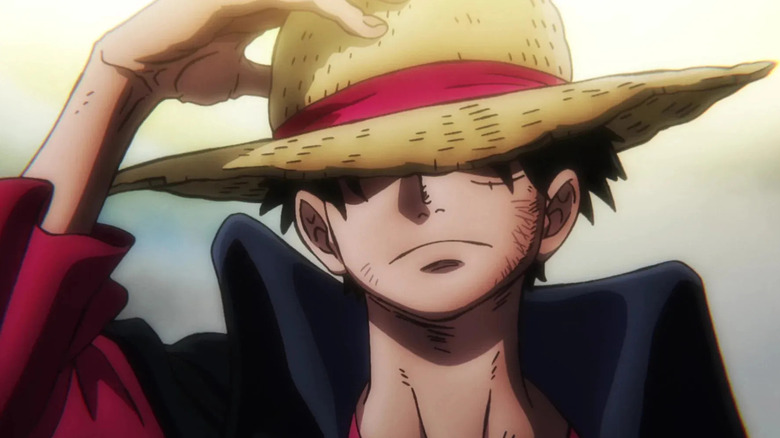

Monkey D Luffy
Monkey D. Luffy (モンキー･D･ルフィ, Monkii D. Rufi) adalah seorang karakter fiksi dan tokoh protagonis utama dalam serial anime dan manga One Piece karya Eiichiro Oda.[1] Ia merupakan putra kandung dari pemimpin Pasukan Revolusioner, Monkey D. Dragon, cucu kandung dari Angkatan Laut terkenal, Monkey D. Garp, putra angkat dari bandit gunung, Curly Dadan, dan saudara angkat dari Portgas D. Ace si "Tinju Api" dan Sabo.
Sosok Luffy sebagai seorang pembuat masalah telah mendunia dan dikenal baik oleh para anggota Angkatan Laut, Shichibukai hingga Yonko karena begitu banyaknya jumlah perilaku kriminal yang telah ia perbuat. Akibat ulahnya itu, pihak Pemerintah Dunia telah menganggapnya sebagai seseorang yang sangat berbahaya.
Tanggal 5 Mei adalah hari kelahiran karakter yang bermimpi menjadi Raja Bajak Laut tersebut. Selain dirayakan oleh jutaan penggemarnya, hari ulang tahun Luffy juga diperingati leh Toei Animation